测试用例是一组消息的集合，在用例中定义了消息执行的前后顺序。用例除了包含消息以外还包含测试说明、判断准则、注释等信息。
测试集合用于逻辑组织测试用例。测试集合中可以包含测试集合。
1. 将鼠标移动到工程视图中的测试工程上，点击鼠标右键，从弹出的菜单(如图 1所示)中选择新建->测试集 ，系统会弹出一个创建测试集的对话框。
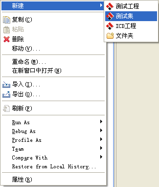
图 1右键菜单
2. 在弹出对话框（如图 2所示）中输入测试用例的名字，然后点击Finish按钮，系统会在对应的测试工程中创建同名的文件夹。
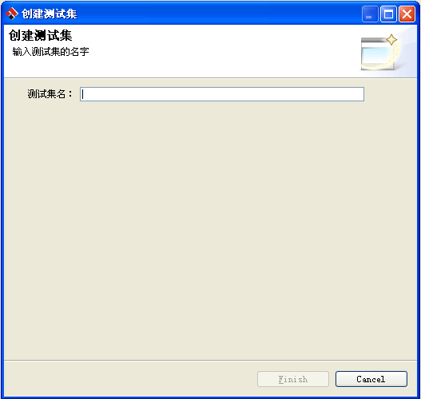
图 2集合名输入框
1. 将鼠标移动到测试集合上，点击鼠标右键，从弹出的菜单中选择新建->测试用例（如图 3所示），然后系统会弹出一个创建测试用例的对话框。
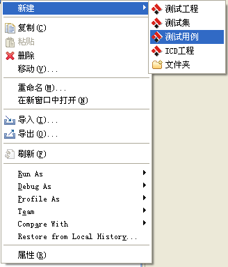
图 3创建测试用例
2. 在弹出的对话框中（如图 4所示），输入测试用例的名字，然后切换到描述页中（如图 5所示）输入测试用例描述信息，描述信息在生成测试报告时会被使用。
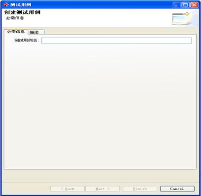
图 4测试用例名输入框
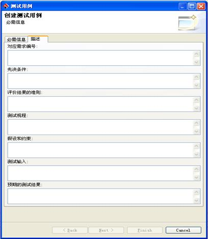
图 5描述信息输入框
3. 点击Next按钮，跳转到选择ICD文件的页面（如图 6所示），在此页面中系统为用户列出了当前工作空间下的所有ICD文件，用户需要在这些文件当中选择一个，然后系统会为用户展示出此ICD文件所包含的所有节点信息，用户需要从这些节点中选择一个或多个作为被测对象。然后点击Finish按钮，系统会为用户生成一个测试用例文件并在编辑器中自动打开，如图 7所示。
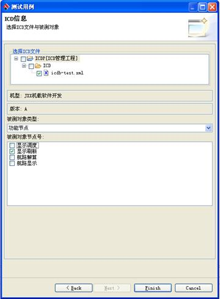
图 6选择ICD
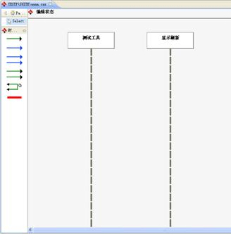
图 7编辑器
编辑界面(如图 8所示)由两部分组成，左边部分为编辑器右边部分为消息视图。编辑器由两部分组成，左边部分为消息图元（如图 9所示），包括普通消息、并行消息、周期消息、背景周期消息、时间间隔、注释， 用户可以使用这些图元在右边的编辑器（如图 10所示）中创建出对应的消息图形。消息视图（如图8所示）为用户展示了整个ICD节点中所有的消息，用户可以从消息视图中拖拽消息到编辑器中，编辑器会根据一定 的规则为用户创建对应的消息对象，如果用户拖拽的消息不符合规则，则拒绝创建消息。
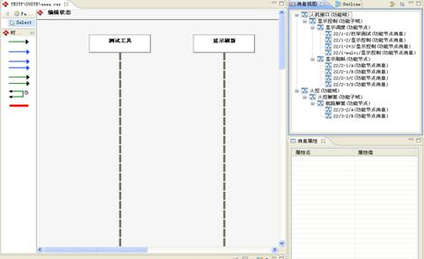
图 8编辑界面
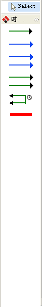
图 9图元面板
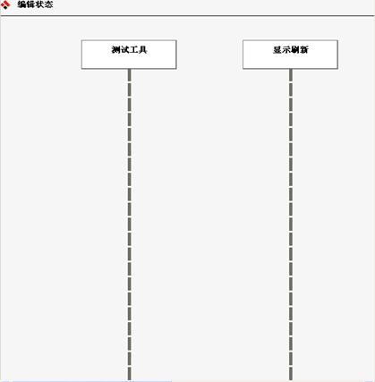
图 10编辑器
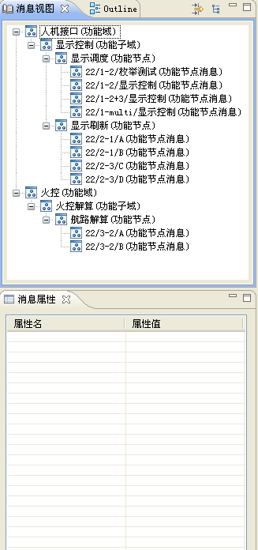
图 11消息视图
用户可以使用普通消息图元(如图 12所示)在编辑器中创建普通的发送消息以及接收消息。当用户从测试工具画向被测对象时，即创建发送消息，当用户从被测对象画向测试工具时，即创建接收消息。发送消息与接收消息如图 13所示。
图 12普通图元
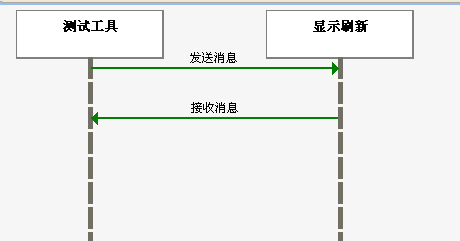
图 13发送消息与接收消息
用户在发送消息图形上双击鼠标，即弹出编辑消息的对话框，如图 14所示。在此对话框中用户可以选择发送的消息，然后系统会在对话框中显示出消息的一些信息，用户可以填写发送的值，当字段的值时枚举类型时用户只能从下拉框中选择值，用户点击OK按钮之后，即保存了刚才编辑的消息信息。
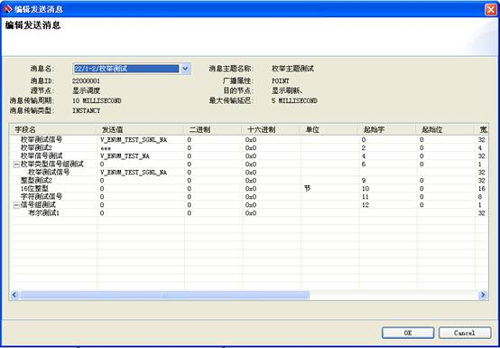
图 14发送消息编辑对话框
用户在接收消息图形上双击鼠标，即弹出编辑消息的对话框，如图 15所示。在此对话框中用户可以选择接收的消息，然后系统会在对话框中显示出消息的一些信息，用户可以填写预期的字段值，当字段的值时枚举类型时用户只能从下拉框中选择值，用户点击OK按钮之后，即保存了刚才编辑的消息信息。
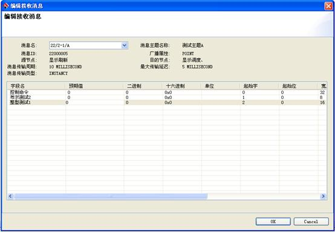
图 15接收消息编辑对话框
用户可以使用周期消息图元(如图 16所示)在编辑器中创建周期发送消息以及接收消息。当用户从测试工具画向被测对象时，即创建周期发送消息，当用户从被测对象画向测试工具时，即创建周期接收消息。周期发送消息与接收消息如图 17所示。
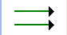
图 16周期消息图元
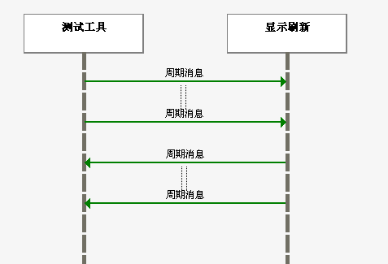
图 17周期发送消息与周期接收消息
用户在周期接收消息图形上双击鼠标，即弹出编辑周期消息的对话框，如图 18所示。在此对话框中用户可以选择发送的周期消息，然后系统会在对话框中显示出消息的一些信息，用户可以设定周期发送消息的周期时间、发送次数、周期修正值。
用户可以针对每个周期进行编辑，即从发送编号下拉框中选择或输入需要编辑的周期，用户可以填写发送的字段值，当字段的值时枚举类型时用户只能从下拉框中选择值，用户点击OK按钮之后，即保存了刚才编辑的消息信息。
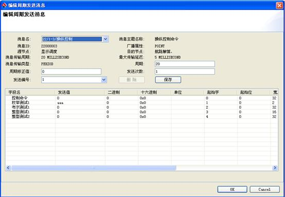
图 18周期发送消息编辑框
用户在周期接收消息图形上双击鼠标，即弹出编辑周期消息的对话框，如图 19所示。在此对话框中用户可以选择接收的周期消息，然后系统会在对话框中显示出消息的一些信息，用户可以设定周期接搜消息的周期时间、发送次数、周期修正值。
用户可以针对每个周期进行编辑，即从接收编号下拉框中选择或输入需要编辑的周期，用户可以填写接收的字段值，当字段的值时枚举类型时用户只能从下拉框中选择值，用户点击OK按钮之后，即保存了刚才编辑的消息信息。
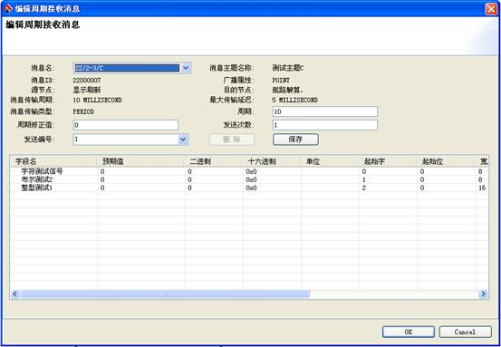
图 19周期接收消息编辑框
用户可以使用并行消息图元（如图 20所示）创建并行接收消息与并行发送消息，创建的方式与普通消息的创建方式一致。并行消息表示，在进行消息收发的时候，一组并行消息是没有先后顺序的。
图 20并行消息图元
并行发送消息与并行接收消息的编辑方式与普通发送消息和普通接收消息的编辑方式一致。
用户可以使用背景周期消息图元（如图 21所示）创建背景周期发送消息与接收消息，创建的方式与周期消息的创建方式一致。背景周期消息表示，在进行执行消息时，背景周期消息会一致运行直到其它消息执行完毕。
图 21背景周期消息图元
背景周期发送消息与背景周期接收消息与周期发送消息和周期接收消息的编辑方式一致，唯一不同的是背景周期消息不需要输入发送次数。
用户可以使用时间间隔图元（如图 22所示）创建时间间隔。时间间隔表示两个消息发生的时间间隔。
图 22时间间隔图元
用户双击时间间隔图形，可以从弹出的对话框（如图 23所示）中输入间隔时间，单位为毫秒。
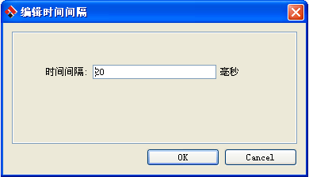
图 23时间间隔编辑框
用户可以使用注释图元（如所示）在编辑器中创建注释图形。注释可以帮助用户更好的理解测试用例。注释图形可以在编辑器中随意的移动。
图 24注释图元
当用户双击图形的标签部分时，系统会弹出一个编辑对话框（如图 25所示），用户可以在此对话框中输入内容。
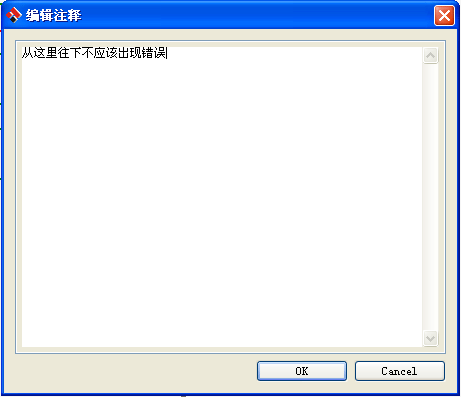
图 25编辑注释对话框